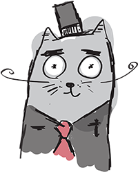

HISSSTORY
De Poezenboot was founded in 1966 by Henriette van Weelde. She started taking in stray cats after she found a homeless kitten near her home. Soon the news spread, and more cats came to her.
Because her house became too small to accommodate all the cats, she bought a houseboat for them. This came on the Singel in Amsterdam. Since then, hundreds of kittens have been floating here every year without their own home. Here they receive food, drinks and good care.
In 2022 the boat started to age. This is why there was a great need for a new houseboat for the cats. But since the Poezenboot does not receive any subsidies, they had to finance it from donations.
Fortunately, there were many cat lovers who cared a lot about the cat boat. As a result, raising money went quickly and they purchased a new boat